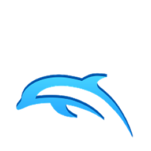

PyroPM and PyroPMEX
PyroPM and PyroPMEX
 Wii Installation
Wii Installation
Requirements:
A Wii with Homebrew Channel installed
2GB SD Card or larger
WinRAR installed on your computer
Optional - If you plan to USB load the game, this guide assumes you already have it working for Legacy TE. If you do not know how to install a USB loader, do not consult me or this guide, as I do not provide support for USB loading.
Download the Wii version of PyroPM or PyroPMEX from the downloads page.
Using WinRAR, extract everything from the archive to a folder.
Copy the apps, private, and PyroPM or PyroPMEX (version dependent) folders to your SD card.
Copy the boot.elf to the SD card as well.
Once completed, eject your SD card from your computer and put it into your Wii.
Power on your Wii and launch Homebrew channel.
Select either the Launcher or the USB Loader depending on which one you use.
Once the launcher starts, hit A to play!
Dolphin Installation
Requirements:
A computer
A Brawl ISO - Do not ask anyone for this. You must rip your own disk in order to get one, otherwise it is piracy.
Download the Dolphin version of PyroPM or PyroPMEX from the downloads page.
Using WinRAR, extract everything from the archive to a folder.
Copy or move your Brawl ISO to the folder labeled "Games".
Open the folder and double click "Dolphin.exe".
Right click the PyroPM or PyroPMEX Launcher and click Start Netplay.
Click Start Netplay andthe game will start!
Having problems? Head over to the contacts page and find out how to get support.